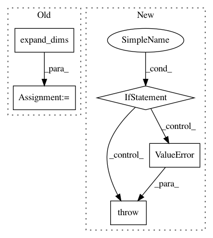

b5c8bdd81be77eac5434a476f62c5bdef56f1838,texar/modules/embedders/position_embedders.py,SinusoidsPositionEmbedder,__init__,#SinusoidsPositionEmbedder#Any#Any#,251
Before Change
inv_timescales = min_timescale * tf.exp(
tf.to_float(tf.range(num_timescales)) * -log_timescale_increment)
scaled_time = tf.expand_dims(positions, 1) \
* tf.expand_dims(inv_timescales, 0)
signal = tf.concat([tf.sin(scaled_time), tf.cos(scaled_time)], axis=1)
signal = tf.pad(signal, [[0, 0], [0, tf.mod(dim, 2)]])
self.signal = signal
def default_hparams(self):
Returns a dictionary of hyperparameters with default values
After Change
self.inv_timescales = inv_timescales
if self._cache_embeddings:
if position_size is None:
raise ValueError(
""position_size" must not be None when "
""cache_embeddings" is set to True"
)
positions = tf.to_float(tf.range(position_size, dtype=tf.int32))
signal = self._compute_embeddings(positions)
self.signal = signal
In pattern: SUPERPATTERN
Frequency: 3
Non-data size: 5
Instances
Project Name: asyml/texar
Commit Name: b5c8bdd81be77eac5434a476f62c5bdef56f1838
Time: 2019-07-01
Author: haoranshi97@gmail.com
File Name: texar/modules/embedders/position_embedders.py
Class Name: SinusoidsPositionEmbedder
Method Name: __init__
Project Name: keras-team/keras
Commit Name: 5a8f346e64cb432a445002230246ee042dbc278b
Time: 2018-11-05
Author: andhus@kth.se
File Name: keras/backend/theano_backend.py
Class Name:
Method Name: rnn
Project Name: scikit-optimize/scikit-optimize
Commit Name: 4af750bec058da0cf5d4a3245a443549b9d7fd33
Time: 2016-04-05
Author: manojkumarsivaraj334@gmail.com
File Name: skopt/gp_opt.py
Class Name:
Method Name: acquisition